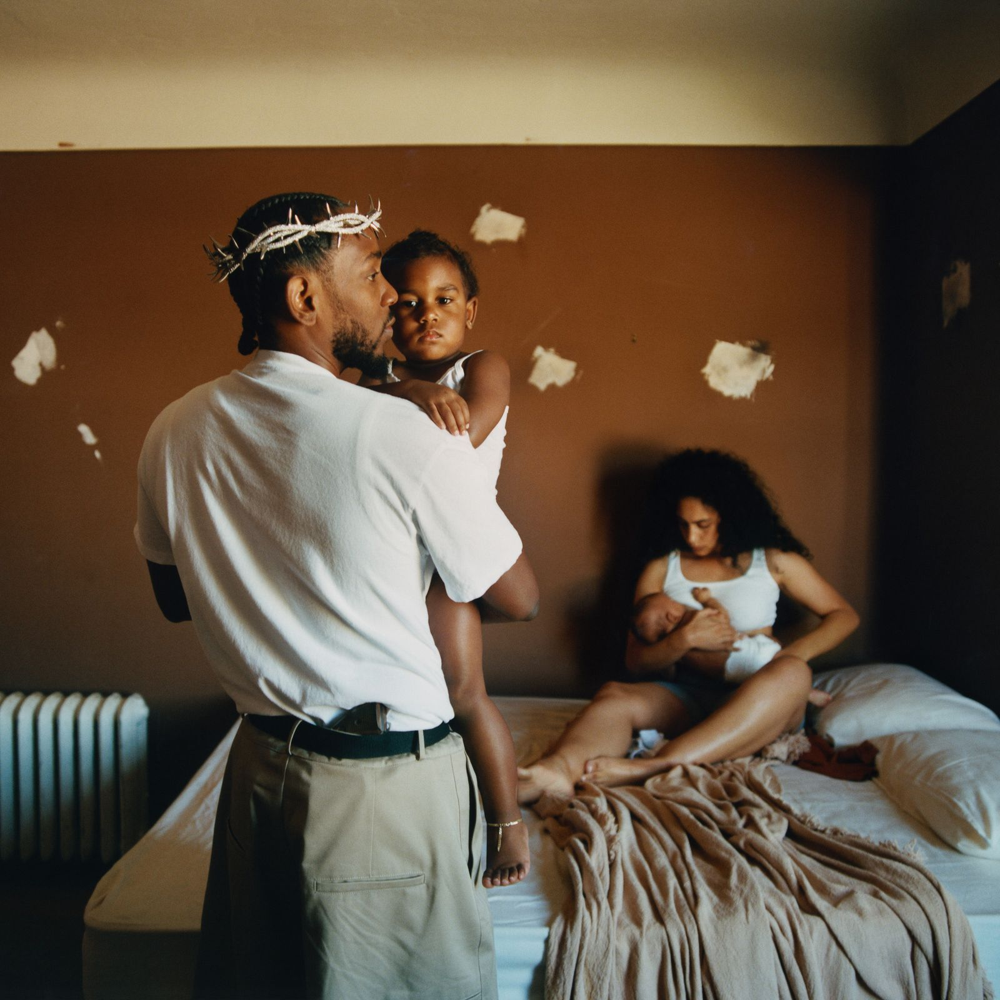
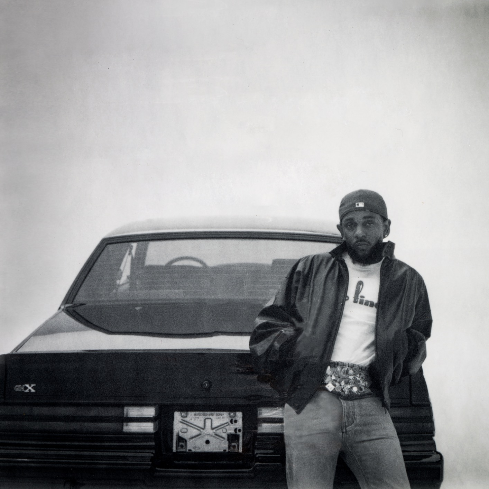

Nato a Compton nel 1987, Kendrick Lamar ha trasformato la povertà e le difficoltà della sua giovinezza in uno storytelling rivoluzionario. Emerso con l'etichetta indipendente TDE, ha sconvolto la scena mondiale con capolavori autobiografici e concettuali come good kid, m.A.A.d city (2012) e To Pimp a Butterfly (2015), affermandosi come voce e pilastro della cultura afroamericana.
Nel 2017 ha fatto la storia vincendo il Premio Pulitzer per la musica con l'album DAMN., consacrandosi per l'eccezionale complessità della sua scrittura.
Attraverso progetti intimi come Mr. Morale & the Big Steppers (2022),e il suo ineguagliabile impatto sulla cultura pop odierna, Kendrick è universalmente celebrato non solo come un'icona del rap, ma come uno dei più grandi poeti contemporanei.


Pubblicato nel luglio 2011, Section.80 è l'album di debutto in studio che ha rivelato al mondo il genio lirico di Kendrick Lamar. Il disco è un concept album incentrato sulla "Generazione Y", cresciuta negli anni '80 tra l'era Reagan e la piaga del crack. Attraverso le storie di personaggi specchio come Tammy e Keisha, Kendrick fotografa dipendenze, nichilismo e traumi urbani.
Musicalmente il progetto fonde l'hip-hop della West Coast con sfumature jazz e calde sonorità neo-soul. Tracce iconiche come "A.D.H.D" descrivono perfettamente l'alienazione giovanile come fuga dalla realtà, mentre il manifesto politico esplode in H.i.i.PoWeR, un grido di ribellione ispirato a Tupac e Malcolm X.
Pur essendo un'uscita indipendente per la TDE, il disco ottenne un clamoroso successo di critica, attirando l'attenzione di Dr. Dre. Con questo lavoro, Kendrick ha gettato le basi del suo storytelling cinematografico, mostrando una maturità artistica rara. Ancora oggi, Section.80 è considerato un classico sotterraneo imprescindibile per comprendere la straordinaria evoluzione del rapper di Compton.
Pubblicato nel 2012, "good kid, m.A.A.d city" è il secondo album di Kendrick Lamar ed è universalmente considerato uno dei più grandi capolavori della storia dell'hip-hop. Sottotitolato "A Short Film by Kendrick Lamar", il disco è un vero e proprio film uditivo strutturato tramite un ordine non lineare e l'uso di messaggi vocali reali dei suoi genitori.
La narrazione segue un giovane Kendrick (K-Dot) che cerca di sopravvivere tra le strade violente e la cultura delle gang di Compton senza perdere la propria bussola morale. Tracce iconiche come "Bitch, Don't Kill My Vibe" e "Swimming Pools (Drank)" nascondono, dietro ritornelli magnetici, riflessioni profonde sulla pressione sociale e sull'alcolismo. La dualità del titolo esplode nella traccia doppia "m.A.A.d city", dove l'innocenza di un "buon ragazzo" si scontra con la follia di una città impazzita. Musicalmente l'album unisce le atmosfere fumose e cinematiche del G-Funk a produzioni moderne e avvolgenti curate da giganti come Dr. Dre e Pharrell Williams. Il culmine emotivo arriva con la redenzione spirituale di *Sing About Me, I'm Dying of Thirst*, una traccia monumentale sulla mortalità e sul lascito artistico.
Il disco ha consacrato Kendrick come il re del nuovo storytelling urbano, ottenendo un successo commerciale straordinario e quattro nomination ai Grammy. Ancora oggi, rappresenta il perfetto punto di equilibrio tra il rap d'autore più profondo e l'impatto pop globale.


Pubblicato nel 2015, To Pimp a Butterfly è un capolavoro assoluto che abbandona il rap tradizionale per immergersi nelle radici della Black music, fondendo jazz, funk, soul e spoken word. Il concept album esplora il peso della fama, la depressione e la complessa condizione sociale della comunità afroamericana.
Tracce monumentali come Alright e I I sono diventate veri e propri inni di protesta, mentre brani come King Kunta e The Blacker the Berry affrontano il razzismo sistemico. L'intera narrazione si sviluppa attorno a una poesia recitata a frammenti da Kendrick, che nel finale si rivela essere una lettera rivolta a Tupac Shakur. Grazie a collaborazioni con geni del calibro di Thundercat e Kamasi Washington, il disco vanta una complessità sonora d'avanguardia.
Osannato dalla critica, il progetto ha ottenuto 11 nomination ai Grammy, vincendone 5. Più che un album, To Pimp a Butterfly è un manifesto politico, sociale e artistico di rara intensità che ha ridefinito i confini dell'espressione musicale moderna.
Pubblicato nel 2017, DAMN. mette da parte le complesse trame jazz per sposare un suono hip-hop e trap più affilato, moderno e diretto. Il disco esplora i conflitti interiori dell'artista attraverso 14 tracce intitolate con una singola parola in lettere maiuscole (come HUMBLE. HUMBLE., PRIDE. PRIDE., FEAR. FEAR.), ognuna legata a un concetto universale o a un peccato. I temi oscillano costantemente tra sacro e profano, affrontando la fede, la dualità umana e il peso della fama.
Hit planetarie e collaborazioni con star del calibro di Rihanna e i U2 hanno spinto il progetto a un successo commerciale travolgente. La struttura narrativa è così geometrica e complessa che l'album è stato stampato anche con la lista tracce invertita, dimostrando che la storia funziona perfettamente in entrambe le direzioni di ascolto.
L'impatto culturale di DAMN. è stato epocale: nel 2018 ha vinto il Premio Pulitzer per la musica, consacrando Kendrick come il primo artista non legato alla musica classica o al jazz a ricevere un simile riconoscimento. Il disco resta il perfetto punto d'incontro tra l'accessibilità pop e la massima profondità lirica.


Pubblicato nel maggio 2022, Mr. Morale & the Big Steppers è un doppio disco profondamente intimo, strutturato come una seduta di psicoterapia. Dopo cinque anni di silenzio, Kendrick mette a nudo traumi infantili, dipendenze e conflitti generazionali, rifiutando apertamente il ruolo di "salvatore" affibbiatogli dal pubblico. L'album è musicalmente teatrale e sperimentale, caratterizzato da arrangiamenti di pianoforte minimalisti, archi drammatici e il suono di passi di tip-tap che simboleggiano i passi falsi della vita.
Premiato con tre Grammy AwardsGrammy Awards, questo lavoro è un capolavoro di vulnerabilità che ridefinisce il concetto di maturità artistica nell'hip-hop contemporaneo.

Pubblicato a sorpresa nel novembre 2024, GNX segna un ritorno infuocato e viscerale alle radici della West Coast e di Compton. Il titolo, che richiama l'auto d'epoca Buick Regal GNX, simboleggia potenza, stile classico e un forte legame con la strada. Arrivato dopo un anno di dominanza culturale, l'album mette da parte l'introspezione terapeutica del passato per sfoggiare un'attitudine fiera, affilata e competitiva.
Il progetto è un trionfo di produzioni dinamiche e campionamenti iconici, con tracce come "wacced out muralswacced out murals" e "tv offtv off" che ridefiniscono il suono di Los Angeles. Circondandosi di talenti emergenti della scena locale, Kendrick affronta nei testi il peso della lealtà, la propria eredità culturale e un'incrollabile integrità artistica.
Osannato da pubblico e critica, GNX ha debuttato in cima alle classifiche mondiali, dimostrando ancora una volta la capacità di Kendrick di controllare il termometro culturale del rap unendo l'urgenza della strada alla maestria del veterano.